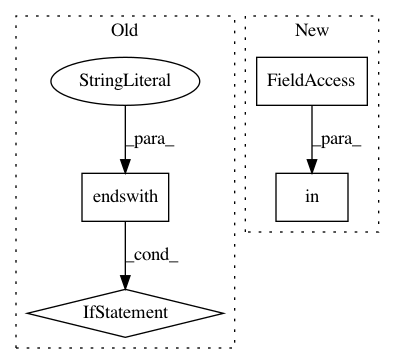

1d9f12ae9b461689b5019b711c597d1d06c13a72,test_video.py,,,#,49
Before Change
assert fps!=0, "Fps is zero, Please enter proper video path"
pbar = tqdm(total = content_video_length)
if(str(style_path).endswith(".mp4") or str(style_path).endswith(".mpg") or str(style_path).endswith(".avi")):
style_video = cv2.VideoCapture(args.style_path)
style_video_length = int(style_video.get(cv2.CAP_PROP_FRAME_COUNT))
assert style_video_length==content_video_length, "Content video and style video has different number of frames"
output_video_path = output_name = output_dir / "{:s}_stylized_{:s}{:s}".format(
content_path.stem, style_path.stem, args.save_ext)
After Change
assert fps != 0, "Fps is zero, Please enter proper video path"
pbar = tqdm(total = content_video_length)
if style_path.suffix in [".mp4", ".mpg", ".avi"]:
style_video = cv2.VideoCapture(args.style_path)
style_video_length = int(style_video.get(cv2.CAP_PROP_FRAME_COUNT))
In pattern: SUPERPATTERN
Frequency: 4
Non-data size: 4
Instances
Project Name: naoto0804/pytorch-AdaIN
Commit Name: 1d9f12ae9b461689b5019b711c597d1d06c13a72
Time: 2020-11-13
Author: levindabhi17@gmail.com
File Name: test_video.py
Class Name:
Method Name:
Project Name: nilearn/nilearn
Commit Name: 9173aaca590df50bbaa6122bc744291617f36b90
Time: 2020-01-09
Author: kc.insight.pi@gmail.com
File Name: nilearn/_utils/testing.py
Class Name:
Method Name: are_tests_running
Project Name: hanxiao/bert-as-service
Commit Name: 70a35555bfea96f8943768b43340d803ee54aaf6
Time: 2019-01-18
Author: hanhxiao@tencent.com
File Name: server/bert_serving/server/graph.py
Class Name:
Method Name: convert_variables_to_constants
Project Name: pantsbuild/pants
Commit Name: ce56ed29d8846c82e611376c79d980e07cc9975c
Time: 2019-09-04
Author: benjyw@gmail.com
File Name: src/python/pants/backend/python/tasks/coverage/plugin.py
Class Name: ChrootRemappingPlugin
Method Name: find_executable_files